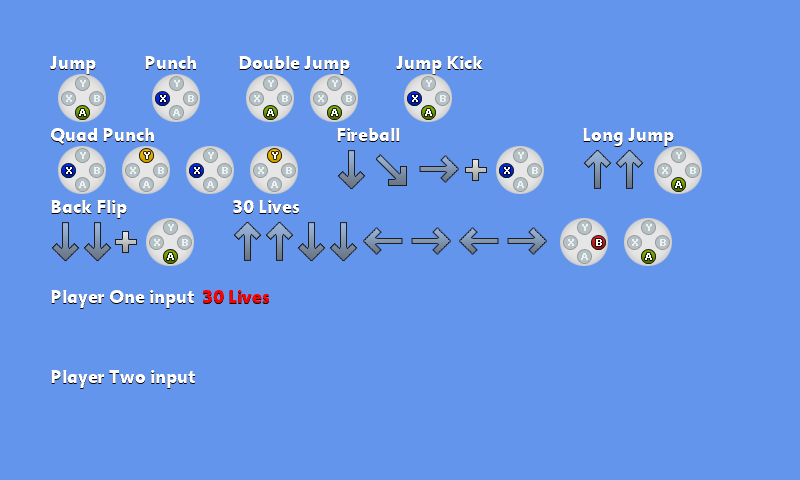

Input Sequence
Ported from Microsoft's XNA 4.0 Input Sequence.
Source for this sample on GitHub ↗

Play ▸Opens in a new tab and runs in this browser. Click the canvas first so it receives the keyboard.
About this sample
Input Sequence demonstrates how a game can buffer directional and face-button presses, then recognize the longest matching move. Its examples range from a single Jump or Punch through simultaneous Jump Kick input, Fireball and the ten-step 30 Lives sequence.
Inputs expire after 500 milliseconds of inactivity. Presses less than 100 milliseconds apart can merge into one step, while direction changes remain separate so impossible combinations are not introduced. Completed non-sub-moves consume the buffer, and the recognized move stays highlighted for one second.
The sample tracks two players. Keyboard input controls player one; connected gamepads can provide the same eight-way directions and A/B/X/Y face-button combinations.
Controls
| Action | Keyboard | Gamepad |
|---|---|---|
| Direction | Arrow keys | D-pad or left stick |
| Face buttons | A, B, X, Y | A, B, X, Y |
| Exit | Esc | Back |
In the browser, exiting ends the sample rather than closing the tab.